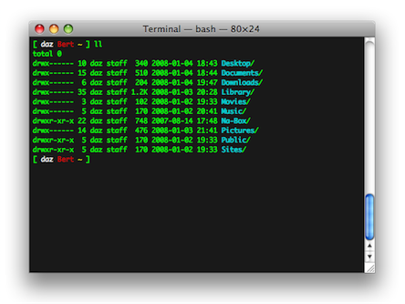

| space, → | next slide |
| ← | previous slide |
| d | debug mode |
| ## <ret> | go to slide # |
| c | table of contents (vi) |
| f | toggle footer |
| r | reload slides |
| z | toggle help (this) |

Forward one word: meta-f
Remap capslock to meta!
$ first command
$ second command
$ <ctrl-r>fir
$ (reverse-i-search)`fir': first command
$ grep foo *.txt
$ echo bar
bar
$ cat /etc/passwd
Permission denied
$ sudo !!
sudo cat /etc/passwd
root:*:0:0:root:/var/root:/bin/sh
$ !-3
echo bar
bar
$ !?foo?
grep foo *.txt
$ !ech
echo bar
bar
$ echo foo bar baz
$ echo !*
echo foo bar baz
$ echo !!:2-3
echo bar baz
$ echo !!:$
echo baz
$ ^baz^quux
echo quux
$ pwd
/etc/log/blah/blah/blah
$ pushd .
$ cd /other/directory/far/far/away
$ do my thing
$ popd
$ pwd
/etc/log/blah/blah/blah
$ time cat
ctrl-d
real 3m3.224s
user 0m0.001s
sys 0m0.003s
$ ps aux | grep ruby
gar 1234 /usr/bin/ruby blah.rb
gar 1235 grep ruby <--- uck!
$ ps aux | grep [r]uby
gar 1234 /usr/bin/ruby blah.rb
$ cat < /dev/tcp/time.nist.gov/13
55581 11-01-20 23:50:52 00 0 0 812.6 UTC(NIST) *